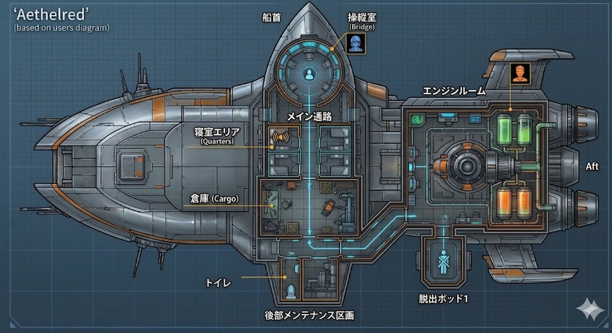

SYSTEM: API KEY CONFIG
Gemini APIキーを入力してください（テスト用）
SAVE & CONNECT
SECURED EVIDENCE
SHIP SCHEMATIC: MAP-01

STATUS: ANALYZING
👉 真犯人を告発する
INTERROGATION PROTOCOL
容疑者を選択して尋問を開始してください。
⬅ 戻る
TARGET NAME
SEND